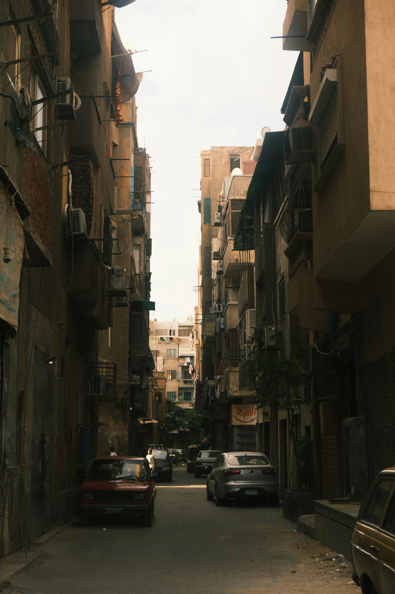
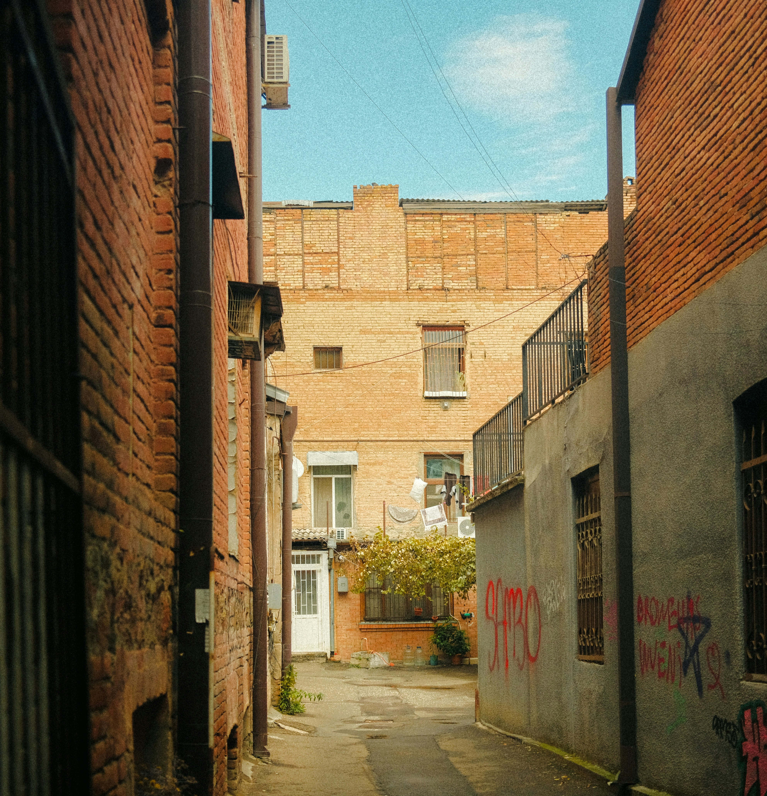
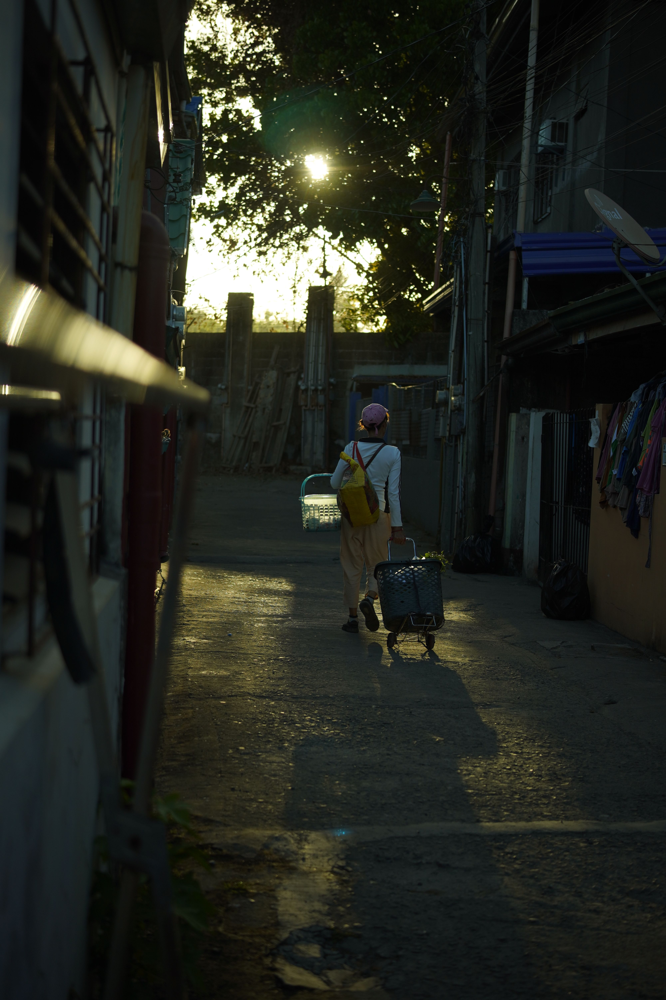

나의 시선 아카이브
같은 단어로 찾았는데, 나는 왜 이 5장을 골랐을까?
하늘
하늘 — 탁 트인 노을이 마음이 편하고 자주 보는 배경이라서 골랐다


손
손 — 책장을 넘기는 손끝의 감촉이 좋아서 골랐다
길
길 — 집으로 돌아가는 길의 익숙함이 좋아서 골랐다



고른 이유
- 하늘 — 탁 트인 노을이 마음이 편하고 자주 보는 배경이라서 골랐다
- 손 — 책장을 넘기는 손끝의 감촉이 좋아서 골랐다
- 길 — 집으로 돌아가는 길의 익숙함이 좋아서 골랐다